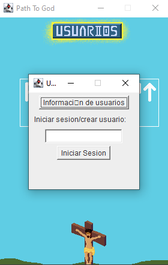
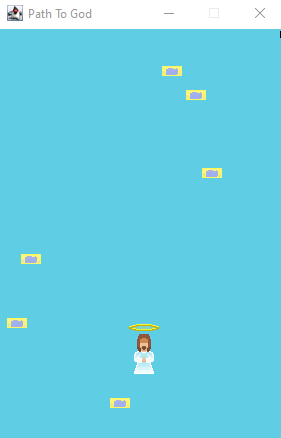

Users can be created just like in stonechaser. Instead of being uploaded to a database, the users are stored in plain text which is less secure for passwords and keeping information.

Gameplay consists in jumping over platforms that appear in the sky, without falling to the void.